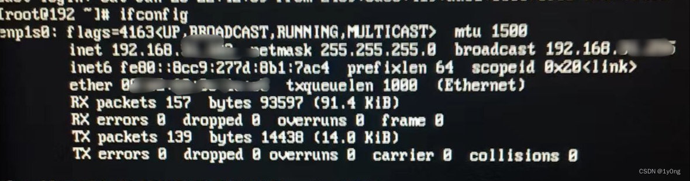
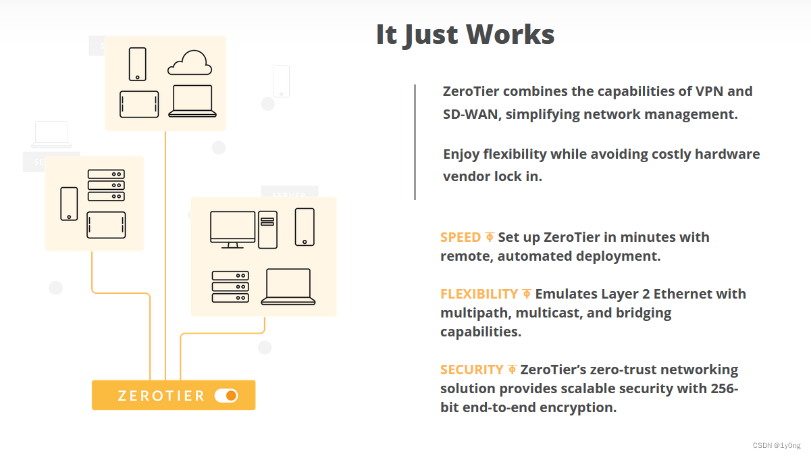
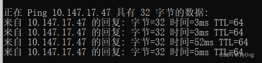

Zerotier的使用体验
背景
我的ipv6服务器是利用春节放假几天搭建起来的，平时是放在家里，而春节结束以后回到了实习租的房子里上班第一天就发现服务器无法访问了，ssh也连不上，但服务器可以出网（因为我的定时任务结束后会给我发消息）
一开始怀疑是我的ddns脚本出了问题，因为阿里云的解析日志一直没有更新，就想通过爆破的方式获得真实的ipv6地址，也失败了（不得不说ipv6空间范围是真的大，开10个线程爆了我2小时，呜呜呜~~~）

周末回到家（论工作地点离家近的重要性hhh）才发现是ipv6地址被回收了，只给我留了个fe80开头的内网ipv6地址

重启路由器的ipv6开关以后又重新得到了ipv6地址（这里不知道是路由器配置的问题还是什么原因，有懂的师傅欢迎在评论区补充）
为了防止这种情况再次发生，除了ipv6直接访问以外我还得有一种备用措施，在没有ipv6的情况下也能访问内网设备，于是Zerotier成为了我的目标
Zerotier
Zerotier是一款用于构建异地虚拟局域网的工具，通过网页后台创建虚拟网络并通过电脑上的Zerotier客户端连接各个异地电脑到虚拟局域网，从而实现组网由后台分配虚拟ip，并且各个异地电脑可以通过虚拟IP对同一虚拟局域网下的其他电脑进行访问

安装配置
Zerotier的安装配置都比较简单，可参照b站上这位up主的视频
强大的内网穿透工具ZeroTier，随时随地远程访问家中NAS和其它设备！没有公网IP也不怕_哔哩哔哩_bilibili
同时centos 的安装可以参照这位大佬的文章
https://blog.csdn.net/COCO56/article/details/123296985#
体验
Zerotier和传统的内网穿透工具不同，并不是通过一个中转服务器来建立连接的，而是使用端到端的p2p协议（在连接不稳定的时候也会采用中转服务器的方式建立连接）

可以看到延迟并不算很高，这几天用下来个人还是比较满意的
通过这种方式可以部署一些只有内网ipv4才可以访问的服务，例如我就用niginx开了个ipv4的端口，将数据转发到了路由器上，下次ipv6出现问题也就可以直接通过Zerotier访问路由器重启ipv6服务
安全性
Zerotier作为一款强大的网络存取服务，拥有内置的AES-256加密算法，并提供安全控制，可以控制用户连接的访问，以限制对私有网络的访问，并防止未经授权的访问，所以Zerotier的安全性还是比较高的
结语
总的来说，ZeroTier的使用确实非常容易。它的简单易用性，功能丰富的网络功能和强大的安全特性，使ZeroTier成为最佳的专业网络解决方案，特别是在新兴兼容性和技术能力需求时期。
（此段结语由ChatGPT生成，嘻嘻~~，总的来说Zerotier还是比较简单好用的，有内网访问需求的伙伴们可以考虑使用）